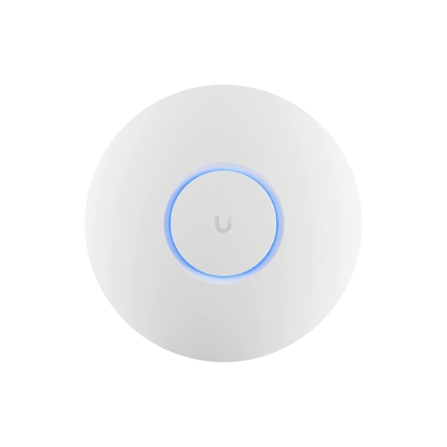

Sobre mim
Meu nome é Wanderson Nunes, tenho 22 anos e sou um entusiasta da tecnologia..
Atualmente, estou cursando o 4º semestre de Análise e Desenvolvimento de Sistemas, onde tenho adquirido conhecimentos valiosos sobre programação, desenvolvimento de software e tecnologias emergentes. Sou apaixonado por aprender novas linguagens de programação e explorar as possibilidades que a tecnologia oferece para resolver problemas e criar soluções inovadoras.
